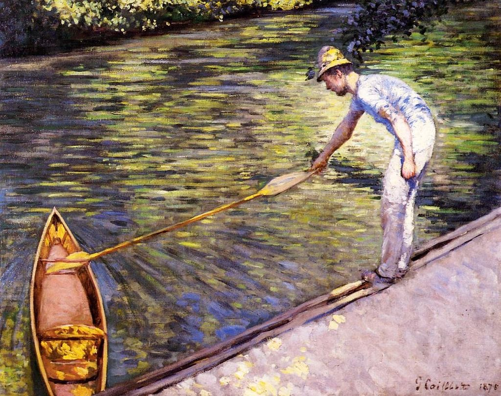

<head>
<meta charset="UTF-8" />
<meta name="keywords" content="drawing, painting" />
<meta name="description" content="drawings by Sunjy" />
<title>Sunjy</title>
<link rel="shortcut icon" type="image/x-icon" href="../../mImages/mCommon/favicon.ico" media="screen" />
<link rel="stylesheet" type="text/css" href="../../mCsses/mCommon/mCssA.css" />
<link rel="stylesheet" type="text/css" href="../../mCsses/mCommon/mCssB.css" />
<link rel="stylesheet" type="text/css" href="../../mCsses/mCommon/mCssC.css" />
<link rel="stylesheet" type="text/css" href="../../mCsses/mCommon/mCssD.css" />
<link rel="stylesheet" type="text/css" href="../../mCsses/mContent/mCssA.css" />
<link rel="stylesheet" type="text/css" href="../../mCsses/mContent/mCssB.css" />
<link rel="stylesheet" type="text/css" href="../../mCsses/mContent/mCssC.css" />
<link rel="stylesheet" type="text/css" href="../../mCsses/mContent/mCssD.css" />
</head>
<script type="text/javascript" src="../../mScripts/mContent/mContentAA.js" /></script>
<script type="text/javascript" src="../../mScripts/mContent/mContentAB.js" /></script>
<script type="text/javascript" src="../../mScripts/mContent/mContentAC.js" /></script>
<script type="text/javascript" src="../../mScripts/mContent/mContentAD.js" /></script>
<script type="text/javascript"></script> 
<script type="text/javascript">
document.write('<div class="mImgAbsolute"></div>');
/*
document.write('<p class="mFontSizeBColor" />From a white paper...</p>');
document.write('<table class="center"><tr><td>');
document.write('');
document.write('</td></tr></table>');
*/
</script>


<script type="text/javascript">
document.write('<p class="mFontSizeBColor" />Boater Pulling on His Perissoire</p>');
document.write('<p class="mFontSizeSColor" />“Boater Pulling on His Perissoire” by Gustave Caillebotte depicts a single rower retrieving his one-main skiff, which is called Perissoire in French.<br><br>A single-seater perissoire is a canoe approximately 3.5 meters to 4 meters long. Its construction is simple, with two boards for the sides and one for the bottom of the boat. It is generally a narrow and unstable boat, therefore dangerous, hence its name.<br><br>It is maneuvered with a double paddle. The origins of the perissoire are very old, coming from the evolution of the dugout canoe. It is found in the south of the United States as part of the French legacy in Louisiana.<br></p>');
document.write('<table class="center" /><tr><td>');
document.write('<br>A single-seater perissoire is a canoe approximately 3.5 meters to 4 meters long. Its construction is simple, with two boards for the sides and one for the bottom of the boat. It is generally a narrow and unstable boat, therefore dangerous, hence its name.<br><br>It is maneuvered with a double paddle. The origins of the perissoire are very old, coming from the evolution of the dugout canoe. It is found in the south of the United States as part of the French legacy in Louisiana.<br>" />');
document.write('</td></tr></table>');
</script>


